Canlı TV
Kanal grupları, favoriler ve son izlenenlerle kendi yayın listenizde hızlıca gezinin.
M3U/M3U8 listelerinizi ve Xtream uyumlu hesabınızı telefon, tablet ve Android TV’de düzenleyin. Canlı kanallarınıza, filmlerinize ve dizilerinize reklamsız bir arayüzden ulaşın.
Android 7.0 ve sonrası · Uygulama içi satın alma · İçerik veya IPTV aboneliği içermez
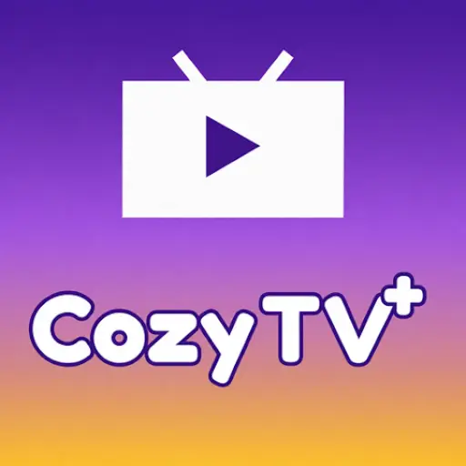
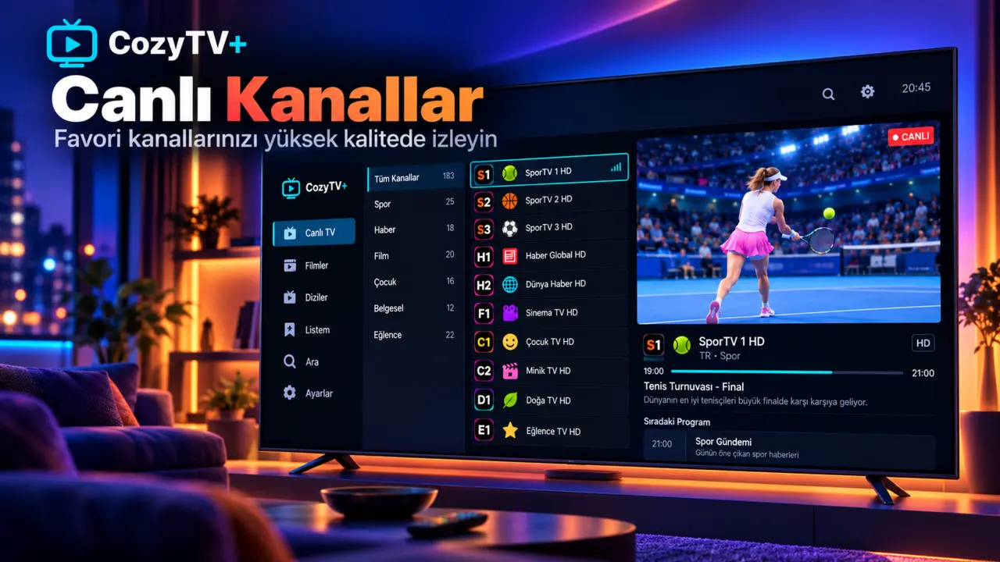
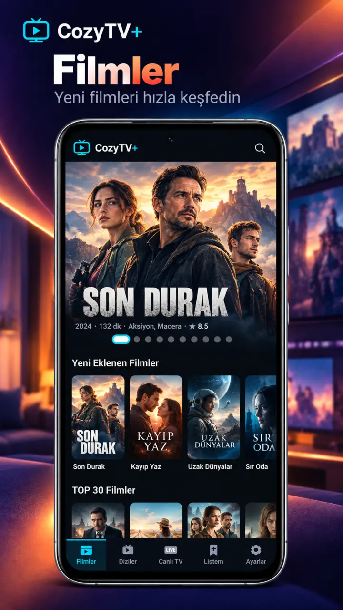
CozyTV+ yalnızca oynatıcıdır. Kendi erişim yetkiniz bulunan kaynakları ekler, cihazınıza uygun arayüzle kullanırsınız.
Kanal grupları, favoriler ve son izlenenlerle kendi yayın listenizde hızlıca gezinin.
Kaynağınızdaki katalogları, sezonları ve bölümleri tek bir düzenli arayüzde inceleyin.
Kanallar, filmler ve diziler arasında arama yapın; içeriklerinizi izleme listenizde düzenleyin.
Desteklenen film ve dizilerde izlemeye kaldığınız noktadan devam edin.
Dokunmatik ekranlara, farklı yönlere ve Android TV kumandasına uyarlanan tasarım.
Listeleriniz, kaynak bilgileriniz, favorileriniz ve izleme geçmişiniz cihazınızda kalır.
Telefon, tablet ve Android TV için ayrı ayrı uyarlanan ekranları inceleyin.
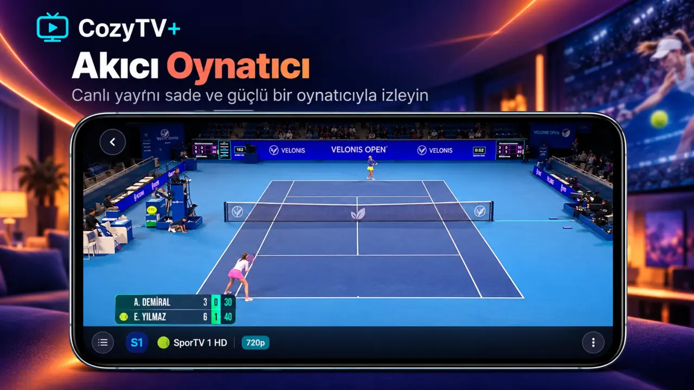
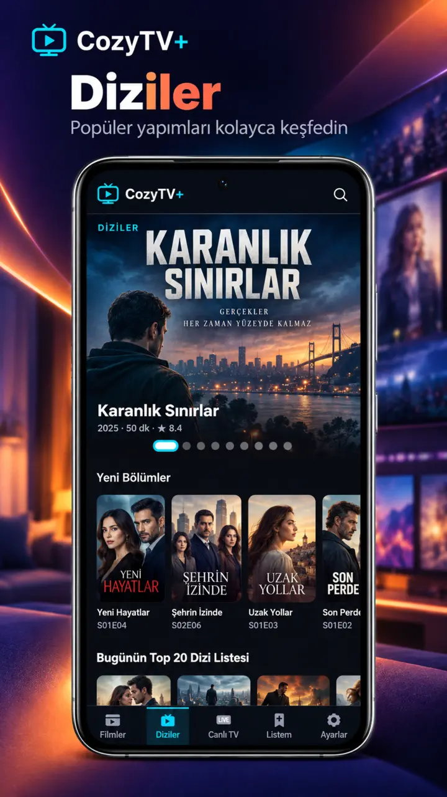
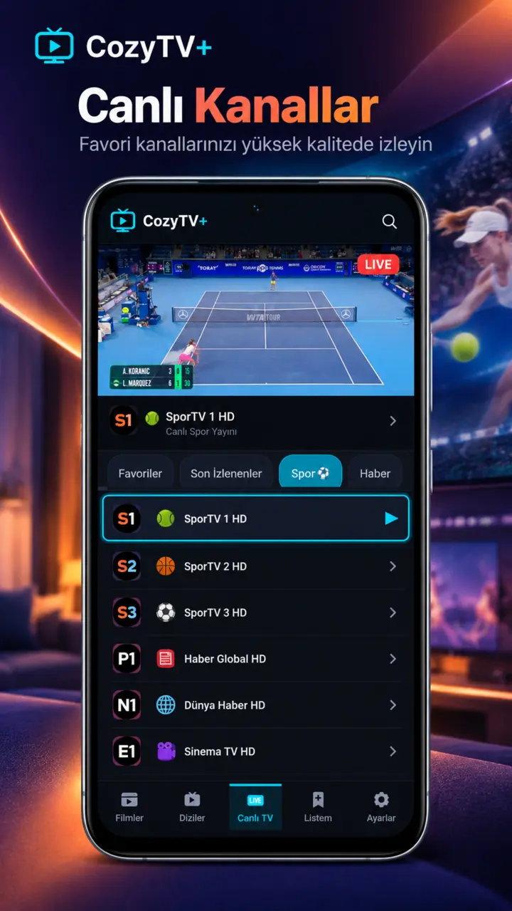
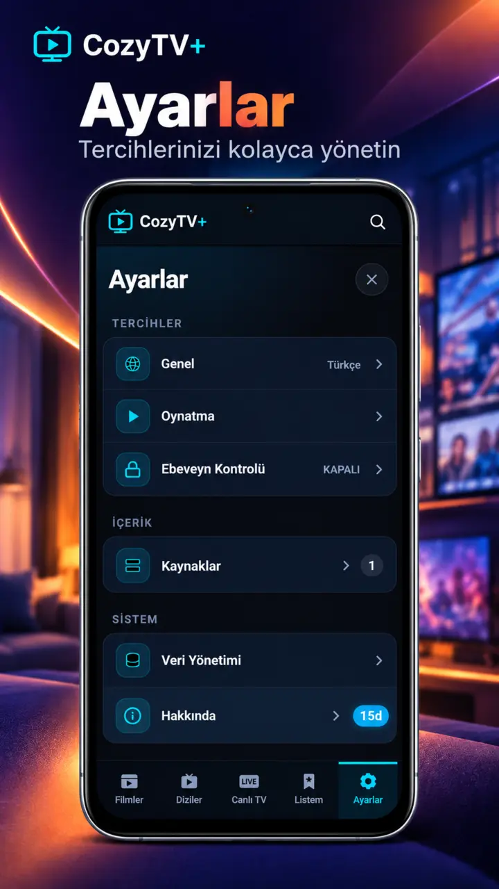
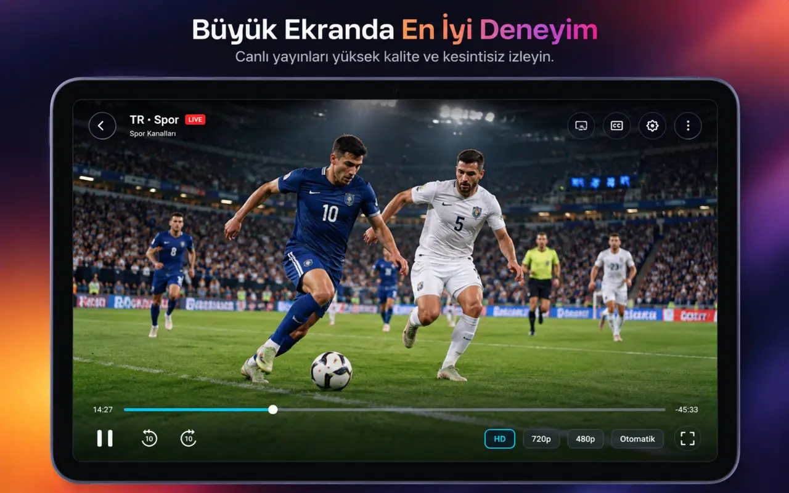
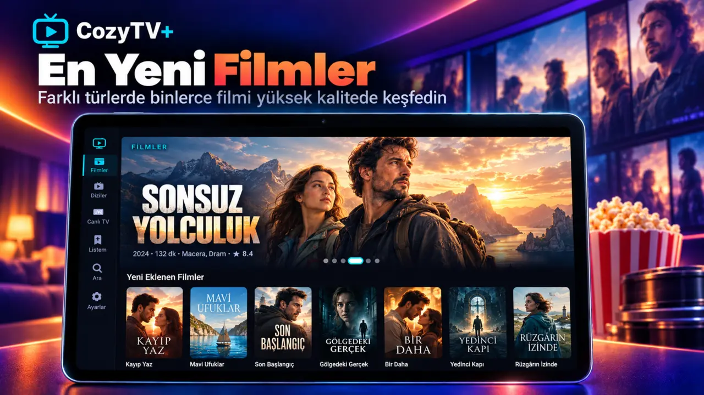
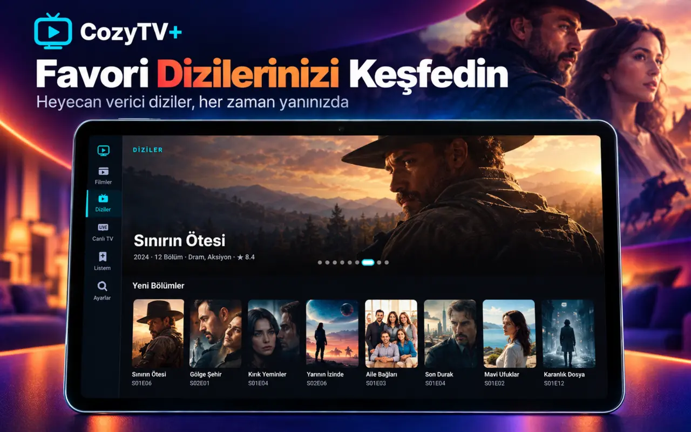
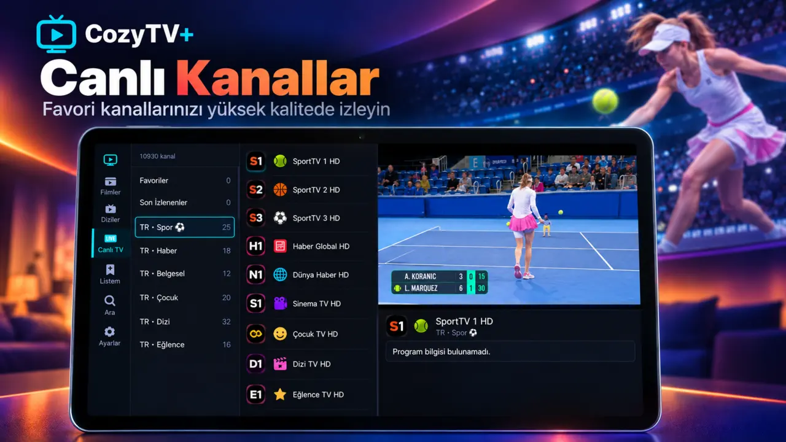
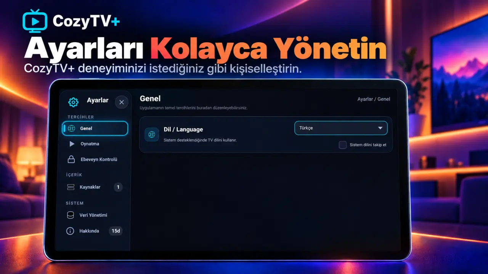
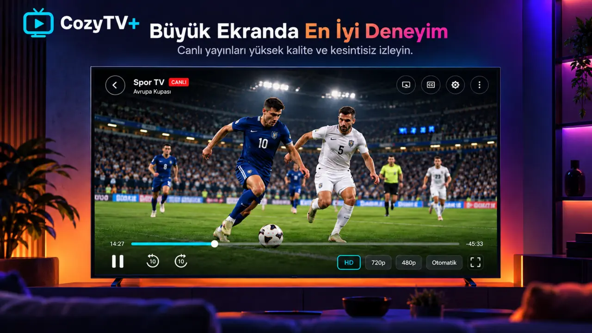
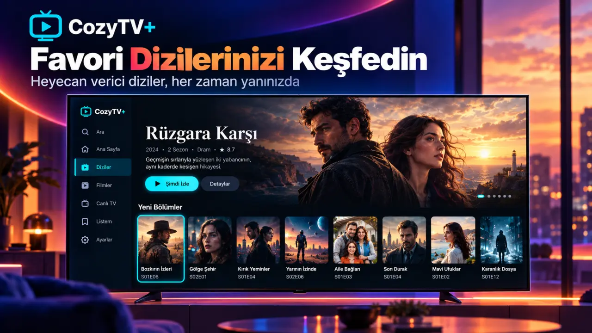
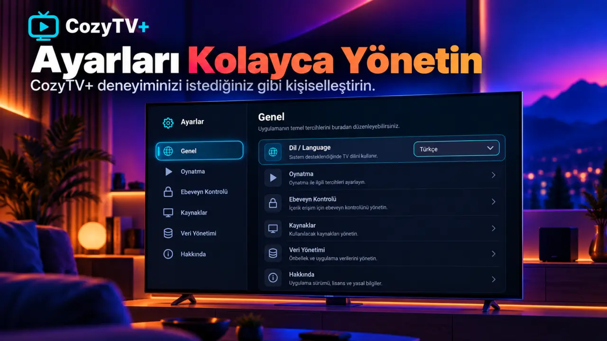
CozyTV+ kanal, film, dizi, IPTV aboneliği veya oynatma listesi sağlamaz. Yalnızca erişim hakkınız bulunan kaynakları kullanın.
Google Play’de Görüntüle